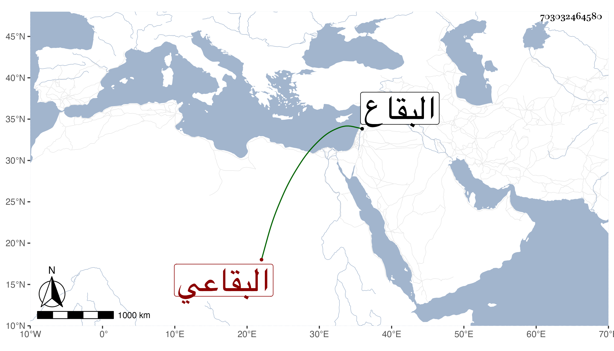

0902Sakhawi.DawLamic.ITO20230111-ara1.EIS1600.703032464580
Biography ID: 703032464580
أحمد بن حسن الرباط بن علي بن أبي بكر البقاعي عم إبراهيم بن عمر الماضي ووالد يوسف الذي ورثه . نقل عنه ابن أخيه أنه كان يقول من أراد أن يغتسل بالماء البارد في زمن البرد ولا يضره فليقل يا ماء لا تؤذيني أشتكيك غدا إلى رب العالمين وأنه كان إذا اغتسل يقوله فوجده صحيحا قال مع أني لا أغتسل بالماء الحار إلا نادرا وربما اغتسلت والثلج ينزل على جسمي وقال أنه هو الذي علمه الكتابة واستفاد منه وأرخ مولده قبل سنة سبعين وسبعمائة تقريبا بخربة روحا من البقاع ووفاته بها سنة عشرين وثمانمائة ظنا عفا الله عنه .
